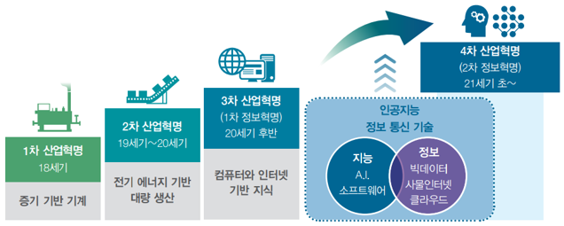
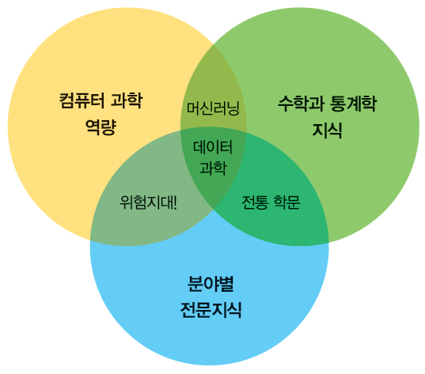
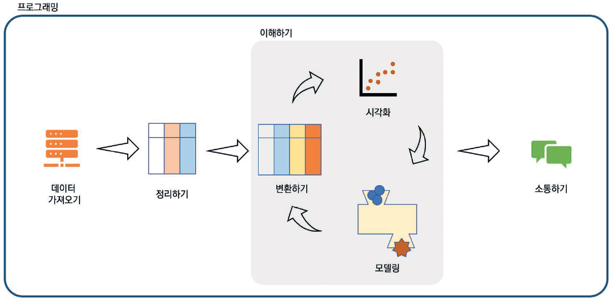

Chapter 1 데이터 분석과 R
1.1 데이터의 이해
1.1.1 데이터의 시대
- 정보화 시대(the age of information) → 데이터의 시대(the age of data)
- 우리를 둘러싼 모든 것들이 데이터 소스와 연결되고, 생활의 많은 부분이 데이터에 의존하여 영위함
- 예 : E-mail, SNS, 전화사용 기록, 신용카드거래 기록, 병원진료 기록, 대중교통 승하차 기록 등
- 4차 산업혁명
- 인공지능(AI), 빅데이터(big data), 로봇, 사물인터넷(IoT), 생명공학기술, 3D 프린터 등 새로운 과학기술이 사회, 경제, 문화 전반에 영향을 미치게 되고, 이러한 변화를 잘 수용하고 가능성을 최대화 하는 시대
- 향후 데이터를 잘 다룰 줄 아는 기업과 개인이 경쟁에서 우위를 점할 것임

1.1.2 데이터 과학
- 데이터 과학
- 과학적 방법, 프로세스, 알고리즘 및 시스템을 사용하여 구조화된(정형) 데이터와 구조화되지 않은(비정형) 데이터를 통해 지식과 통찰력을 추출하고 광범위한 활용 영역에서 실행 가능한 통찰력을 적용하는 융합 분야
- 데이터를 통해 실제 현상을 이해하고 분석하기 위해 통계학, 데이터 분석, 기계학습과 연관된 방법론을 통합하는 개념
- Drew Conway는 데이터 과학은 (1) 컴퓨터 과학 역량(hacking skills), (2) 수학과 통계학 지식(math and statistics knowledge), (3) 분야별 전문지식(substantive expertise)의 교집합이라 소개함

- Hadley Wickham이 제시한 데이터 과학의 과정
| 과정 | 설명 |
|---|---|
| 데이터 가져오기 (import) |
- 분석할 데이터를 가져오는 단계 - 파일, Open API, 데이터베이스 등 다양한 데이터 소스를 분석 시스템으로 가져와 읽어 들임 |
| 정리하기 (tidy) |
- 가져온 데이터를 일괄된 형태로 재구조화하는 단계 - 이 단계를 통해 정리한 데이터를 tidy data라 명명함 |
| 변환하기 (transform) |
- tidy data에서 필요로 하는 새로운 값을 구하거나, 분석에 필요한 데이터로 변환하는 과정 |
| 시각화 (visualization) |
- 데이터에서 의미를 도출하는 과정 중 하나로, 시각을 통해 의미를 전달함 - 좋은 시각화는 예상하지 못한 것을 보여줄 수도 있고, 데이터를 잘 이해할 수 있도록 만들어 한 차원 높은 질문을 이끌어 낼 수도 있음 |
| 모델링 (model) |
- 데이터를 통해 수립한 모델을 이용하여 예측 등의 과정을 수행하는 단계 - 향후 머신러닝으로 확장되기도 함 |
| 소통하기 (communicate) |
- 데이터에서 찾아낸 세상의 모습을 다른 사람들에게 공유하는 과정 |

1.2 R 및 R Studio 설치
1.2.1 R
- 통계 분석 과정에서 수행되는 복잡한 계산이나 시각화 기법 등을 쉽게 사용할 수 있도록 설계된 프로그래밍 언어 및 환경
- 1976년 AT&T의 Bell Labs Statistics Group에서 개발한 프로그래밍 언어 S를 향상시켜 1993년 뉴질랜드 오클랜드 대학의 Ross Ihaka Robert Gentleman이 R을 개발함
- 현재 R은 통계학 및 컴퓨터 과학 분야 등의 학자들로 이루어진 R Development Core Team에 의해 지속적으로 유지 및 개선되고 있음
- 무료로 제공되는 오픈소스 소프트웨어
- 접근성이 뛰어나 전 세계 많은 사용자들을 단시간에 확보할 수 있었음
- 패키지(package)를 통한 확장성이 뛰어나 다른 R 사용자들이 개발한 새로운 분석기법을 자유롭게 추가할 수 있음 다른 소프트웨어에 비해 최신 이론이나 기법을 사용하기 쉬움
- 다양한 통계분석 및 뛰어난 그래픽 기능
- 편리한 도움말 기능
- 프로그램 명령어를 직접 입력하는 방식